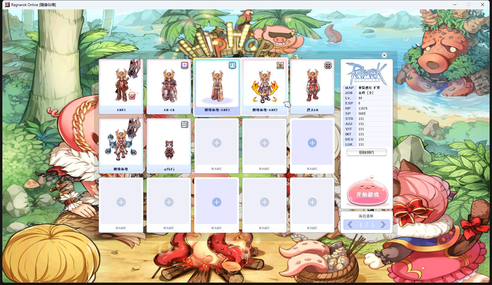

| 名称 | 已加密 | 必须 | 用途 | 在 data.ini 的加载顺序要求 | 下载 | 提取码 |
|---|---|---|---|---|---|---|
| data_ui_zh.grf | 客户端 UI 窗体汉化 | 在 data.grf 之前 | 腾讯微云 | thfpef | ||
| data_npc.grf | NPC 角色形象 | 随意，建议在 data.grf 之后 | 腾讯微云 | 4rxjag | ||
| data_illust.grf | NPC 角色立绘、宠物预览图 等 | 随意，建议在 data.grf 之后 | 腾讯微云 | 3mn9ga | ||
| data_wav.grf | 自定义音乐、音效等 | 随意，建议在 data.grf 之后 | 腾讯微云 | 7fewtx | ||
| data_jro_201608.grf | JRO 头饰图档（201507-201608） | 随意，建议在 data.grf 之后 | 腾讯微云 | t89mhq | ||
| data_clothes_2022.grf | 韩服服饰素材（2022） | 随意，建议在 data.grf 之后 | 腾讯微云 | qj7uf7 | ||
| data_clothes_cartoon.grf | 二次元动漫服饰图档（如龙珠西鲁、火影九尾等） | 随意，建议在 data.grf 之后 | 腾讯微云 | dfpkx9 | ||
| data_maps_new_2022.grf | 韩服新地图（2022） | 随意，建议在 data.grf 之后 | 腾讯微云 | wfg8wr | ||
| data_maps_custom_2023.grf | 自定义新地图（2023） | 随意，建议在 data.grf 之后 | 腾讯微云 | 669aqd | ||
| data_maps_fix_*.grf | 更多改版地图（详见清单，每次只能使用其中一份） | 在 data.grf 之前 | 详细清单 | |||
| data_damage_*.grf | 更多伤害字型（详见清单，每次只能使用其中一份） | 在 data.grf 之前 | 详细清单 | |||
| data_ring_*.grf | 更多光环（详见清单，每次只能使用其中一份） | 在 data.grf 之前 | 详细清单 | |||
| data_bg_*.grf | 更多客户端登录背景图（详见清单，每次只能使用其中一份） | 在 data.grf 之前 | 详细清单 | |||
| data_jro_3th_job_2017.grf |
JRO 三转职业新形象外观、坐骑外观、染色修复（2015 ~ 2017） 最新版的韩服已修复，一般无需使用此图档补丁 |
在 data.grf 之前 | 腾讯微云 | 5bgu22 | ||
| data_ui_charcard_2018.grf |
2018 角色卡片选择图档 最新版的韩服默认已使用，一般无需使用此图档补丁  |
在 data.grf 和 data_ui_zh.grf 之前 | 腾讯微云 | suxihr | ||
| data_big_head_doll.grf |
大头娃娃补丁（仅限非四转职业） |
在 data.grf 之前 | 腾讯微云 | dit5vp | ||
| data_big_card.grf |
卡片放大补丁（放大成为魔法卡） |
在 data.grf 之前 | 腾讯微云 | kgjzqk |